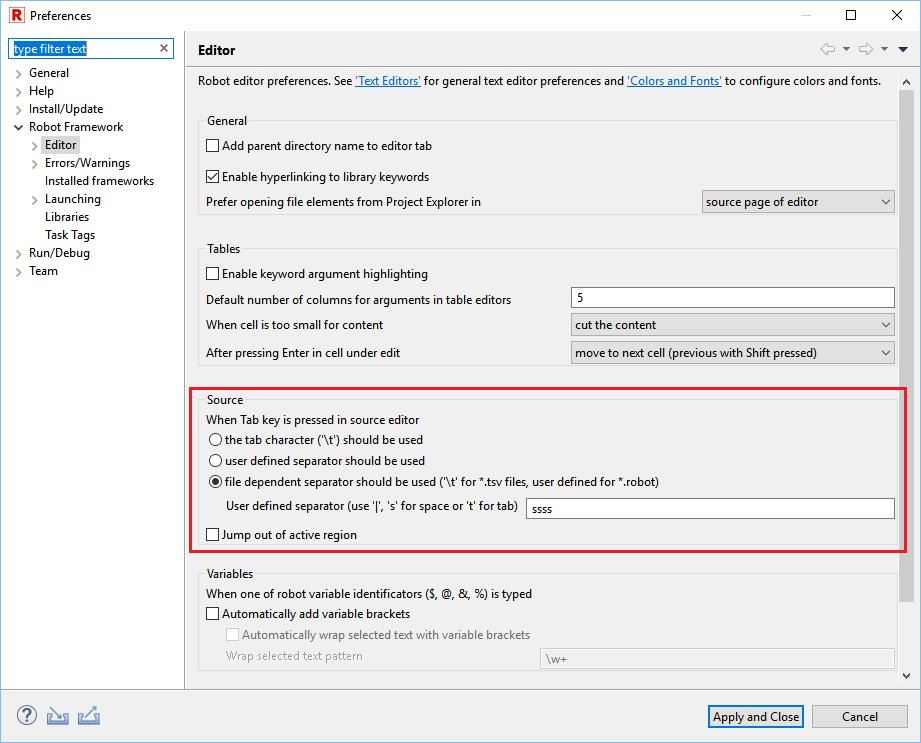

General usage hints
Tab key behavior
Tab key press behavior can be changed at
Window -> Preferences -> Robot Framework -> Editor in Source section.
It is set by default to be aware of the file type. For .tsv files each Tab will produce item separator, for text files 4 spaces will generated.
Moreover, jump out of active region behavior can be enabled there. If enabled, instead of inserting defined separator in source editor, RED will move cursor to the end of active region. It may be useful for example for variables edition.

Validating & revalidating whole project/workspace
Validation of test case is triggered by any user actions, it is also done during files & project imports.
Whenever there is a change in multiple files (for instance find/replace) or big file import/deletion, it is good to force revalidation of project.
It is done accessing option Project -> Clean...

At the bottom right of RED, progress bar will appear with the status of validation.
Automatic source formatting CTRL+SHIFT+F
Formatting source is Eclipse based mechanism which provides code formatting with several predefined rules which are
disabled by default. Alternatively it is also possible to use Robot Tidy tool to format the source.
Source code formatting preferences can be configured at
Window -> Preferences -> Robot Framework -> Editor -> Code Formatter.
It is invoked by right click menu in Source editor or automatically as editor save action, which can be configured at
Window -> Preferences -> Robot Framework -> Editor -> Save Actions

- Note
- RED does not support source formatting in *.tsv files
Quick Fix - Ctrl+1
Quick Fix is an Eclipse mechanism to provide user with predefined action for solving issues.
If the Quick Fix action is available, light bulb icon is shown next to line number.

Quick Fix can be accessed by clicking on underlined item and choosing from right click menu Quick Fix or directly by Ctrl+1.
Running selected test case
RED can run or debug one, selected testcase. This can be achieved by altering Run Configuration :

and also by placing cursor on testcase body and using right click menu: